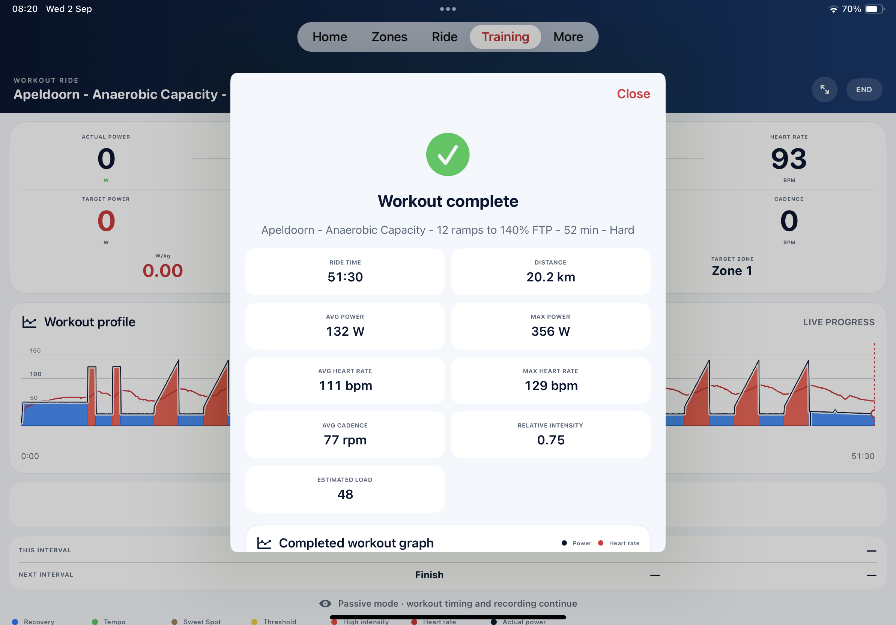
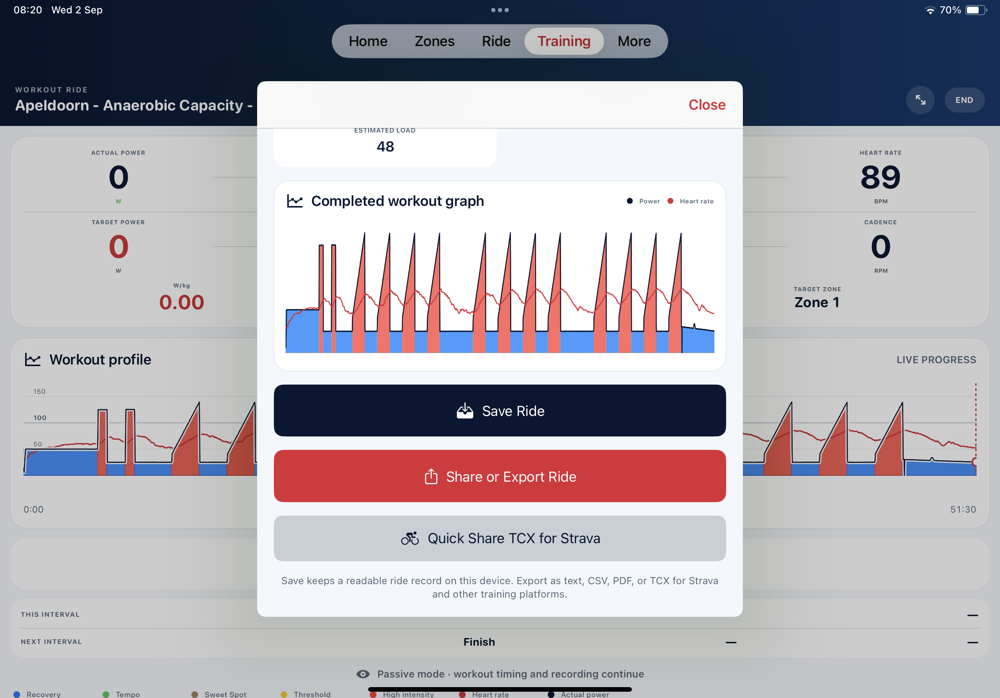

06
Review
Finish with a useful record of the work.
The final screen brings the completed graph and ride metrics together. Save the ride locally in a readable history, share a clear summary or export data for another training platform.
Completed graphLocal historyText, CSV and PDFTCX export

Complete the loop
See more than a simple completed tick.
Compare the shape of the prescribed session with the power and heart-rate traces recorded during the ride, then review the numbers that describe the completed effort.
- Ride time, distance and average cadence
- Average and maximum power
- Average and maximum heart rate
- Actual relative intensity and estimated load
- Completed workout graph
Keep it your way
Readable on the device. Portable when you need it.
Ride History keeps completed sessions available locally. When the data needs to travel, choose a format suited to a message, spreadsheet, report or training platform.

The complete journey
Understand. Choose. Connect. Ride. Review.
Inside Edge Ride turns training knowledge into a structured session and keeps the result—without the clutter of a virtual cycling world.